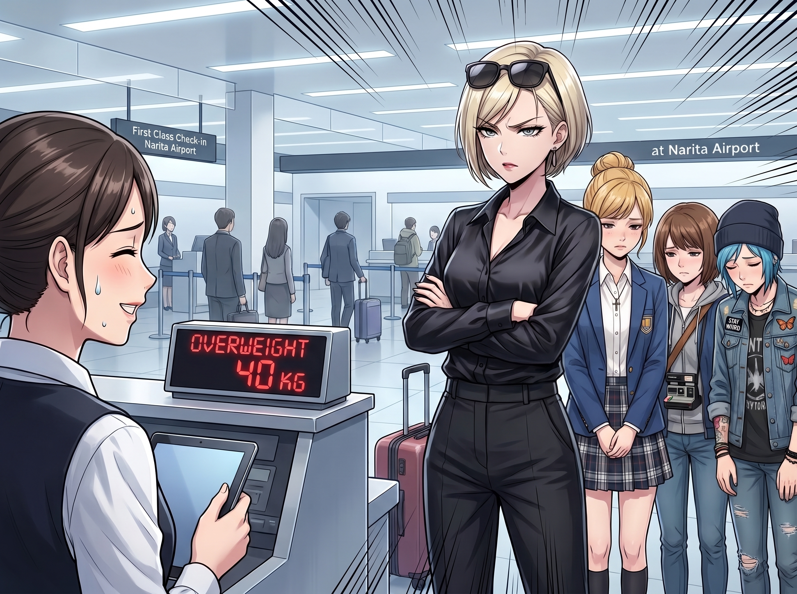
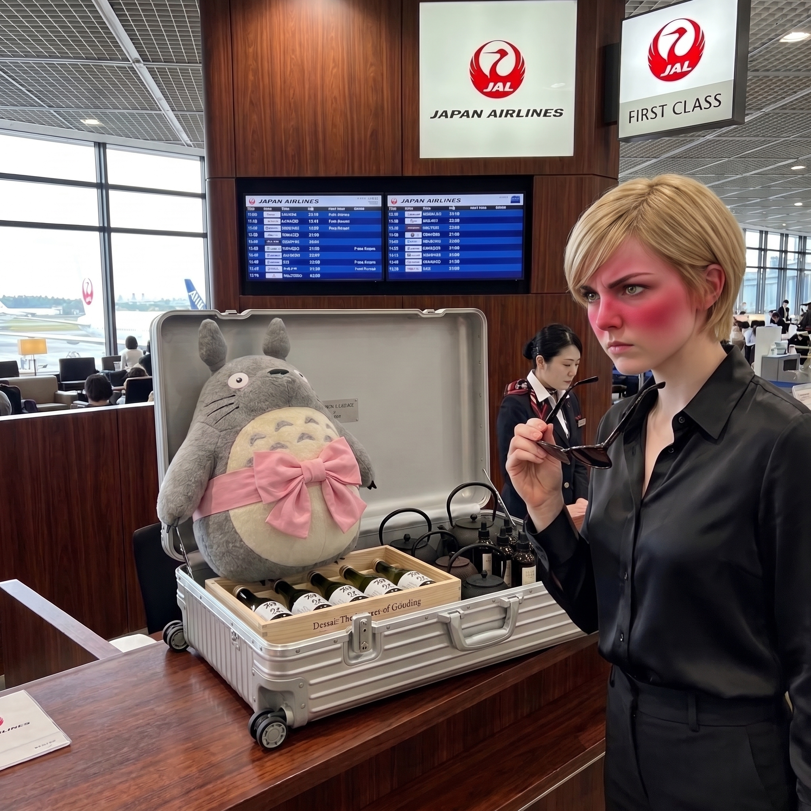
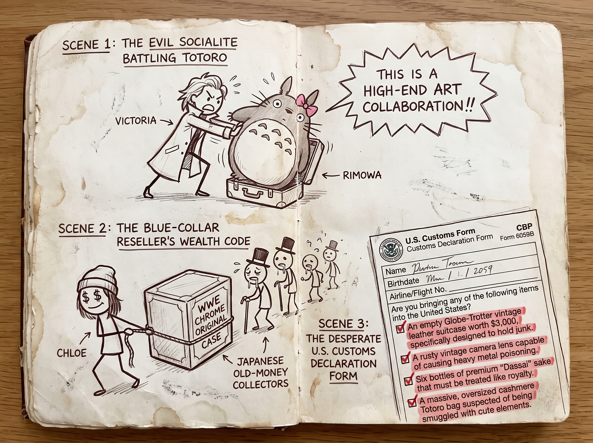

龍貓大冒險



成田機場的頭等艙專屬值機櫃檯前，氣氛降到了冰點。
地勤人員帶著無可挑剔的日式微笑，看著行李秤上那幾個發出刺眼紅光、嚴重超重的數字，用流利的英文溫柔地提醒：「Chase 小姐，您團隊的這幾件行李……超重了將近四十公斤呢。」
這句話就像點燃了炸藥桶的引線。
一、名媛的機場狂暴時刻
Victoria 穿著剪裁得體的黑色真絲襯衫，戴著墨鏡，雙手抱胸，高跟鞋在機場的大理石地板上踩出煩躁的節奏。她轉過頭，對著身後那幾個宛如做錯事的小學生般低著頭的傢伙，開啟了火力全開的總裁說教模式：
「四十公斤？！Price，妳是把秋葉原那家地下卡店的承重牆拆了塞進行李箱了嗎？！還有妳，Caulfield，我讓妳買點底片，妳是不是把整個新宿中古店的廢鐵鏡頭全搬空了？！」
Chloe 揉了揉鼻子，小聲嘟囔：「那裡面還有給 Kate 買的六套美濃燒陶瓷茶具和三大盒文具……而且我那一箱絕版卡牌是硬通貨，是能抗通脹的！」
「閉嘴！『抗通脹』不是讓妳們把行李塞成逃難難民的藉口！現在，立刻，把妳們那堆毫無審美的垃圾箱打開！把最重的東西拿出來手提！」
二、意外彈開的秘密
為了重新分配重量，Chloe 只能不情願地蹲下來，試圖把幾盒最重的厚卡轉移到旁邊的空袋子裡。在手忙腳亂中，她沉重的馬汀靴不小心絆了一下，整個人往前一撲，手肘重重地砸在了 Victoria 那個原本安靜躺在行李車最下方的限量版鋁鎂合金巨型托運箱上。
「啪嗒」一聲脆響。因為塞得太滿，箱子的金屬鎖扣在撞擊下居然直接彈開了。箱蓋在彈簧的作用下緩緩升起了一條縫隙。
「Price！妳那沾滿卡牌灰塵的手離我的箱子遠一——」
Victoria 的怒吼才到一半，突然像被人掐住了脖子一樣戛然而止。她臉色瞬間慘白，一個箭步衝上去想把箱子壓住，但已經來不及了。
眼尖的 Max 剛好站在最佳視角，她推了推眼鏡，指著箱子縫隙裡露出的一團毛茸茸、帶著兩隻長耳朵的巨大不明物體，發出了靈魂拷問：「Victoria……那是什麼？」
在三雙眼睛的強勢注視下，Victoria 僵硬地鬆開了手。箱蓋徹底打開，裡面完全沒有什麼高定禮服或藝術拍賣文件。佔據了箱子整整三分之二空間的，是一個極度巨大、毛茸茸、做工極其精緻的聯名款龍貓純手工羊絨玩偶。
而龍貓的肚子底下，還嚴絲合縫地壓著：整整六瓶極其沉重的頂級清酒、一套重達十公斤的鑄鐵茶壺，以及十幾個裝滿了高端院線抗老精華的沉重玻璃瓶。
三、鴉雀無聲與社會性當機
值機櫃檯前出現了長達十秒的死寂。
「大富婆……」Chloe 瞪大了眼睛，指著那個幾乎佔據了整個箱子的巨大龍貓玩偶，聲音都在顫抖，「這就是妳所謂的『具有高度財政紀律與極致審美』的行李？」
「哦天啊！」Kate 雙手捧心，眼睛裡閃爍著純粹的驚喜與感動，直接發動了最致命的天使暴擊，「Victoria！這隻大龍貓也太可愛了吧！它的毛色跟妳的眼睛好搭哦！」
被當場抓獲的名媛，此刻臉頰紅得簡直能滴出血來。她一把扯下墨鏡，試圖用最兇狠的眼神挽回最後一絲尊嚴：「這……這是為了基金會辦公室採購的軟裝陳設！這叫高級藝術聯名！而且那些鐵壺是給 Marsh 泡茶用的！清酒是商業餽贈！」
「是是是，」Max 默默地舉起了相機，一邊找角度一邊冷酷補刀，「高級藝術聯名龍貓，它的肚子甚至還繫著一個粉紅色的蝴蝶結呢。」
四、總裁的極限救場
眼看著地勤人員還在微笑等待，而身後排隊的商務人士已經開始好奇地探頭探腦，Victoria 的羞恥心終於達到了臨界點。
她「啪」地一聲將箱子狠狠蓋上、鎖死：「不准笑！誰再敢發出一點聲音，我就把她從三萬英尺的高空扔進太平洋！」
Victoria 深吸了一口氣，一把抽出那張黑色的百夫長信用卡，轉頭看向旁邊機場免稅區內一家閃閃發光的頂級旅行箱專賣店。
兩分鐘後，踩著高跟鞋的名媛帶著一身殺氣，從專賣店裡單手拖著一個剛剛刷卡買下、標價三千美金的全新、巨大且完全空著的復古手工行李箱走了回來。
她將空箱子重重地拍在地勤櫃檯前，咬牙切齒地下令：「Price，把妳那些見鬼的紙牌，還有 Caulfield 那些破銅爛鐵，全部給我塞進這個新箱子裡！這筆錢從妳們下半年的零用錢和底片預算裡扣！」
Chloe 一邊把超重的盒子往新箱子裡塞，一邊笑得連肩膀都在抽搐：「遵命，大富婆！為了保衛您的聯名款大龍貓不被壓扁，這點犧牲是值得的！」
就這樣，這場跨國公款旅遊，在 Victoria 自費購買高價空箱子、並被迫收穫了一張與粉紅蝴蝶結龍貓同框的抓拍黑歷史中，完美落下了帷幕。